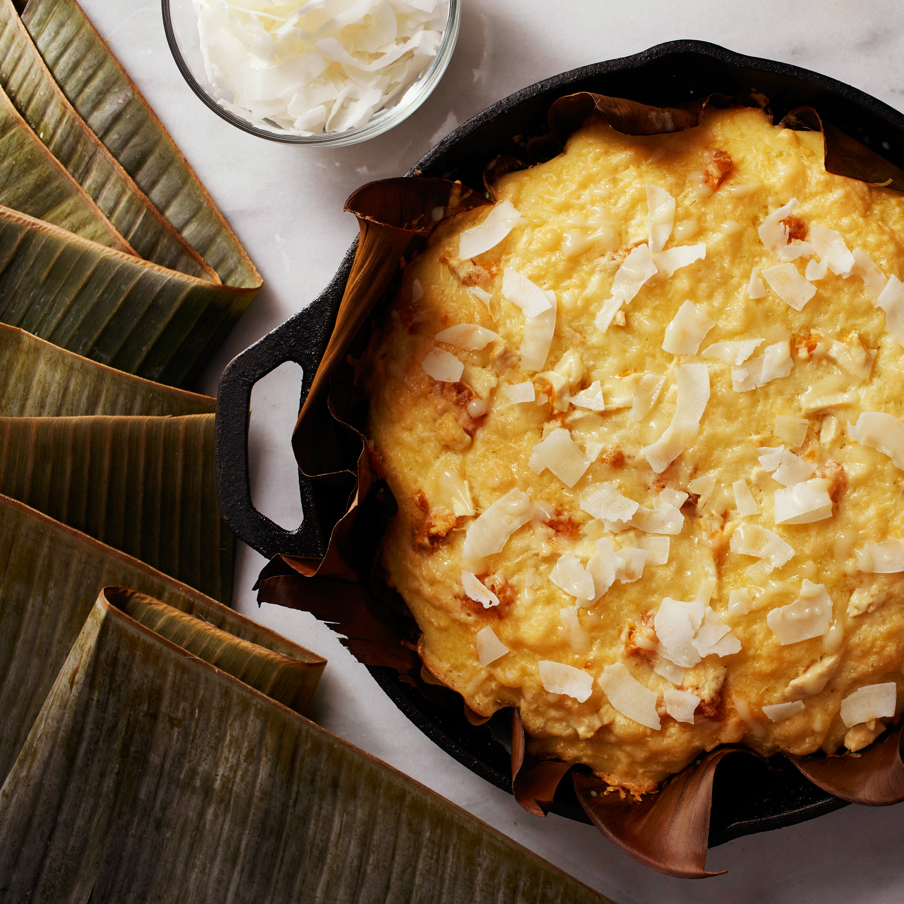

Bibingka

- Rice flour
- All-purpose flour
- Sugar
- Milk
- Water
- Baking powder
- Salt
- Vegetable oil
- Eggs
- Grated cheese
- Grated coconut
- Butter
<<<<<<< HEAD
Steps
- Cut circles from banana leaves to line up pans. Cut another batch for top cover, then rinse and pat dry the leaves
- Line pans with banana leaves and brush with butter
- Combine ingredients for batter in a bowl and mix well until smooth and runny
- Divide mixture into molds and add 3 slices of salted eggs.
- Arrange on baking sheet and bake at 200 degrees Celsius for 10 minutes.
- Remove from oven and top Bibingka with butter, cheese and coconut
=======
>>>>>>> 9cdac7c264c9c3455dcbc644a767b3eadb710261